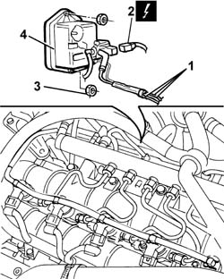
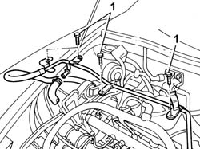
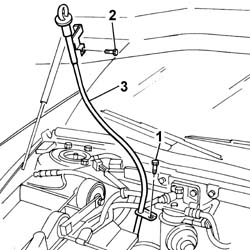
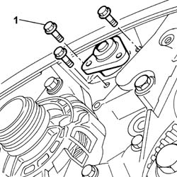
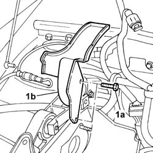
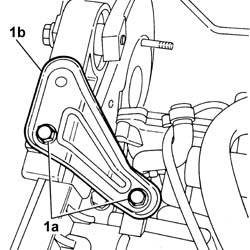
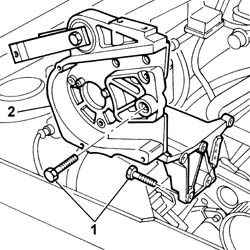
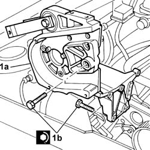
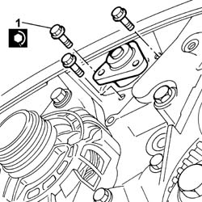

1060E40 PRESSURE PUMP SUPPORT - R.R.
- Path
- Procedures > 10 ENGINE > 1060 DIESEL FUEL INJECTION SYSTEM > 1060E DIESEL PRESSURE PUMP > 1060E40 PRESSURE PUMP SUPPORT - R.R.
- Kind
- repair procedure (removal / refitting; the operation number is the code)
- Applies to
- engines: 2.4 JTD 20V; all production periods
- Interactive page
- https://sloeber94.github.io/elrnDB-lThss/en/#/850516
Applies to: engines: 2.4 JTD 20V; all production periods
 Removing
Removing
 Refitting
Refitting- Position the vehicle on a lift.
- Open the boot and disconnect the negative battery terminal.
See in Op. 7055B54 PROTECTION/GUARD under engine - R.R.
See in Op. 4450B04 Right FRONT WHEEL (one) - R.R.
See in Op. 7055B42 FRONT WHEEL ARCH LINER (one), left or right - R.R.
See in Op. 7055B64 Engine compartment DUST SEAL in front wheel arch (one), left or right - R.R.
See in Op. 1016A10 SOUND-PROOFING COVER - R.R.
See in Op. 7040D50 ENGINE COMPARTMENT UPPER SOUND INSULATION SHIELD - R.R.
See in Op. 1048B44 RIGID air supply PIPE from heat exchanger to intake manifold - R.R.
See in Op. 1048A56 UPPER RESONATOR - R.R.
See in Op. 1092G10 Engine components single drive BELT - R.R.
See in Op. 1092G21 Engine components single belt FIXED TENSIONER - R.R. with belt removed
See in Op. 1092A10 Crankshaft PULLEY - R.R.
See in Op. 1032D12 Timing system protective COVER(S) - R.R.
See in Op. 1032B10 TOOTHED timing BELT - R.R. for timing adjustment or replacement
See in Op. 1060E30 PRESSURE PUMP drive PULLEY - R.R.
See in Op. 1060E10 PRESSURE PUMP for diesel injection - R.R.
1. Disconnect the vacuum pipes from the brake servo vacuum pipe, from the pneumatic valve on the throttle casing and from the rigid section connected to the variable geometry solenoid valve.
2. Disconnect the electrical connection for the solenoid valve on the vacuum reservoir.
 | Description | Connector |
|---|---|---|
2 | Throttle body solenoid valve | L062 |
- Release the vacuum pipes from the retaining bands.
3. Undo the nuts fixing the vacuum reservoir to the mounting bracket.
4. Remove the vacuum reservoir.

Applies to: engines: 2.4 JTD 20V; all production periods
1. Undo the bolts securing the water recirculation pipe.

Applies to: engines: 2.4 JTD 20V; all production periods
- Raise the lift.
1. Undo the lower bolt securing the engine oil dipstick tube.
- Lower the lift.
2. Undo the upper bolt securing the engine oil dipstick tube.
3. Release the coupling for the engine wiring from the fastening on the pipe, then remove the engine oil dipstick pipe from the top part of the engine compartment.

Applies to: engines: 2.4 JTD 20V; all production periods
1. Undo the bolts fixing the power assisted steering pump and move it from its housing retracting it.

Applies to: engines: 2.4 JTD 20V; all production periods
1. Undo the two retaining bolts (1a) and remove the power assisted steering pump guard (1b).

Applies to: engines: 2.4 JTD 20V; all production periods
1. Undo retaining bolts (1a) and remove bracket (1b).

Applies to: engines: 2.4 JTD 20V; all production periods
1. Undo the retaining bolts.
2. Remove the pressure pump support.

Applies to: engines: 2.4 JTD 20V; all production periods
Refitting
Removing1. Fit the pressure pump support (1a) and secure it using the bolts (1b).
 | Value - daNm | Fastening | Component | Ø |
|---|---|---|---|---|
1b | (Cylinder block/crankcase) 2.5 | Bolt | INJECTION PRESSURE PUMP MOUNT | M8 |

Applies to: engines: 2.4 JTD 20V; all production periods
- Fit the bracket joining the intake manifold and the cylinder head and tighten the fixing bolts.
- Fit the power assisted steering pump guard and tighten the retaining bolts.
1. Position the power assisted steering pump in its housing and secure it tightening the bolts to the recommended torque.
| Value - daNm | Fastening | Component | Ø |
|---|---|---|---|---|
1 | 2.5 | Bolt | POWER STEERING PUMP | M8 |

Applies to: engines: 2.4 JTD 20V; all production periods
- Fit the oil dipstick pipe, raise the lift and tighten the lower fixing bolt on the oil sump.
- Lower the vehicle and tighten the upper fixing bolt.
- Press fit the engine wiring coupling on the engine oil dipstick pipe.
- Fit the rigid water recirculation pipe and connect it to the flexible sections on the head and on the thermostat.
- Tighten the bolts fixing the recirculation pipe to the intake manifold.
- Fit the vacuum reservoir and tighten the fixing nuts to the mounting bracket.
- Connect the electrical connection for the solenoid valve on the vacuum reservoir.
| Description | Connector |
|---|---|---|
. | Throttle body solenoid valve | L062 |
- Connect the vacuum pipes to the brake servo vacuum pipe, to the pneumatic valve on the throttle casing and to the rigid section connected to the variable geometry solenoid valve.
- Secure it to the engine using the plastic bands opened previously.
See in Op. 1060E10 PRESSURE PUMP for diesel injection - R.R.
See in Op. 1060E30 PRESSURE PUMP drive PULLEY - R.R.
See in Op. 1032B10 TOOTHED timing BELT - R.R. for timing adjustment or replacement
See in Op. 1032D12 Timing system protective COVER(S) - R.R.
See in Op. 1092A10 Crankshaft PULLEY - R.R.
See in Op. 1092G21 Engine components single belt FIXED TENSIONER - R.R. with belt removed
See in Op. 1092G10 Engine components single drive BELT - R.R.
See in Op. 1048A56 UPPER RESONATOR - R.R.
See in Op. 1048B44 RIGID air supply PIPE from heat exchanger to intake manifold - R.R.
See in Op. 7040D50 ENGINE COMPARTMENT UPPER SOUND INSULATION SHIELD - R.R.
See in Op. 1016A10 SOUND-PROOFING COVER - R.R.
See in Op. 7055B64 Engine compartment DUST SEAL in front wheel arch (one), left or right - R.R.
See in Op. 7055B42 FRONT WHEEL ARCH LINER (one), left or right - R.R.
See in Op. 7055B54 PROTECTION/GUARD under engine - R.R.
See in Op. 4450B04 Right FRONT WHEEL (one) - R.R.
- Top up the engine coolant, following the instructions in the description:
See in Op. 0010T21 ENGINE COOLANT - Check density and top up if necessary
- Connect the negative battery terminal.
- Remove the vehicle from the lift.
Topics linked from this page (16)
- 0010T21 ENGINE COOLANT - Check density and top up if necessary
- 1016A10 SOUND-PROOFING COVER - R.R.
- 1032B10 TOOTHED timing BELT - R.R. for timing adjustment or replacement
- 1032D12 Timing system protective COVER(S) - R.R.
- 1048A56 UPPER RESONATOR - R.R.
- 1048B44 RIGID air supply PIPE from heat exchanger to intake manifold - R.R.
- 1060E10 PRESSURE PUMP for diesel injection - R.R.
- 1060E30 PRESSURE PUMP drive PULLEY - R.R.
- 1092A10 Crankshaft PULLEY - R.R.
- 1092G10 Engine components single drive BELT - R.R.
- 1092G21 Engine components single belt FIXED TENSIONER - R.R. with belt removed
- 4450B04 Right FRONT WHEEL (one) - R.R.
- 7040D50 ENGINE COMPARTMENT UPPER SOUND INSULATION SHIELD - R.R.
- 7055B42 FRONT WHEEL ARCH LINER (one), left or right - R.R.
- 7055B54 PROTECTION/GUARD under engine - R.R.
- 7055B64 Engine compartment DUST SEAL in front wheel arch (one), left or right - R.R.